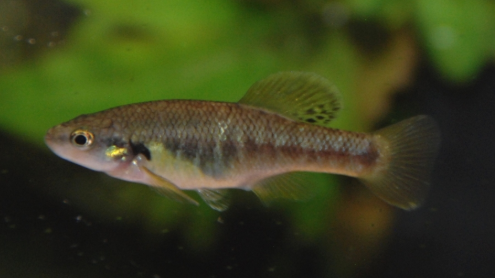

Systématique
- Ordre : Cyprinodontiformes
- Famille : Goodeidae
- Genre : Allodontichthys
- Espèce : A. zonistius
- Auteur : Hubbs, 1932

Allodontichthys zonistius est un goodeidé benthique de petite taille, originaire de l'ouest du Mexique. Il se distingue des autres membres du genre par ses nageoires dorsale et anale qui présentent des bandes ou des zones sombres caractéristiques, d'où son nom d'espèce (zonistius signifiant "nageoires zonées"). Son corps est allongé, svelte, avec une tête large et aplatie, adaptée à un mode de vie sur le substrat dans des zones de courant.
Les femelles mesurent environ 6 à 7 cm, tandis que les mâles atteignent environ 5 cm. La coloration générale est beige à olivâtre avec des taches sombres irrégulières le long de la ligne latérale et sur le dos, offrant un camouflage efficace sur les galets. C'est l'espèce type du genre Allodontichthys.
Allodontichthys zonistius est une espèce benthique qui passe l'essentiel de son temps posée sur le fond. En aquarium, son comportement rappelle celui des darters nord-américains. Il est territorial, particulièrement les mâles qui peuvent défendre agressivement des fentes entre les roches. Il est impératif de fournir un décor riche en galets et en anfractuosités pour réduire les tensions.
Comme il vit naturellement dans les rapides des rivières, il exige une eau très riche en oxygène et un brassage important. Une eau stagnante ou pauvre en oxygène lui est rapidement fatale. Il est moins craintif que ses congénères une fois acclimaté, mais reste une espèce de fond qui nage peu en pleine eau.
Mode : Vivipare matrotrophe.
La reproduction est typique des Goodeinae. La gestation dure environ 55 à 60 jours. Les embryons sont nourris par la femelle via des trophotaeniae très visibles à la naissance. Les portées sont modestes, oscillant généralement entre 10 et 20 alevins.
Les jeunes naissent à une taille respectable (12-14 mm) et sont immédiatement capables de se fixer au fond malgré le courant. Ils consomment tout de suite des nauplies d'artémias ou de la nourriture fine. Le taux de survie est élevé dans un aquarium spécifique bien agencé avec des cachettes au sol.
Dimorphisme sexuel : Le mâle possède un andropode (nageoire anale modifiée). Il est plus petit et présente des motifs plus contrastés sur les nageoires impaires. La femelle est plus massive, surtout en période de gestation, et possède une nageoire anale normale.
Espérance de vie : 3 à 5 ans en aquarium.
L'espèce est endémique du bassin du Rio Armeria et du Rio Coahuayana dans les États de Colima et Jalisco au Mexique. Elle peuple les zones de "riffles" (rapides) où le courant est le plus fort, sur des substrats de galets et de roches volcaniques.
L'eau y est cristalline et très oxygénée. Ce biotope est menacé par les prélèvements d'eau pour l'irrigation, la construction de barrages et la pollution agricole. Bien que moins critique que pour A. polylepis, l'habitat de A. zonistius subit une dégradation constante.
Répartition

Origine naturelle :
- Mexique : Bassins des Rio Armeria et Rio Coahuayana (Colima et Jalisco).
- Localité type : Rio Colima, Colima, Mexique.
Statut UICN : Vulnérable à En danger. Sa distribution est fragmentée et dépendante de la qualité des cours d'eau de montagne.
Paramètres de maintenance
Température : 18 à 24 °C (Oxygénation maximale obligatoire).
pH : 7,0 à 8,0.
GH : 10 à 20 °dGH.
Courant : Fort à très fort (Pompe de brassage indispensable).
Volume conseillé : Minimum 80-100 L pour un groupe, avec un aménagement type "rivière".
Régime alimentaire
Régime : Carnivore benthique (insectivore).
Il se nourrit principalement de larves d'insectes aquatiques et de petits crustacés. En aquarium, il accepte volontiers les nourritures surgelées (vers de vase, daphnies, artémias). L'accoutumance aux granulés de fond est possible mais ils ne doivent pas être l'unique source de nourriture.